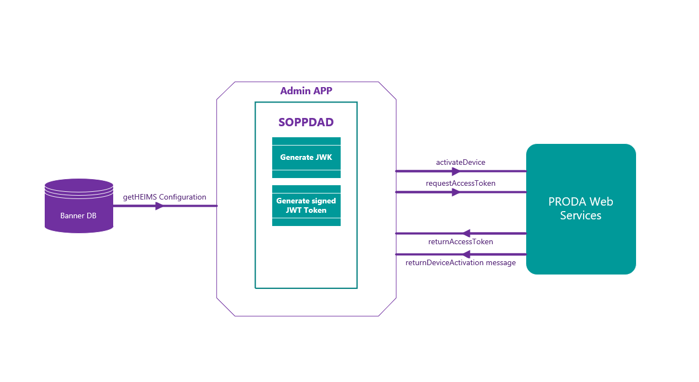
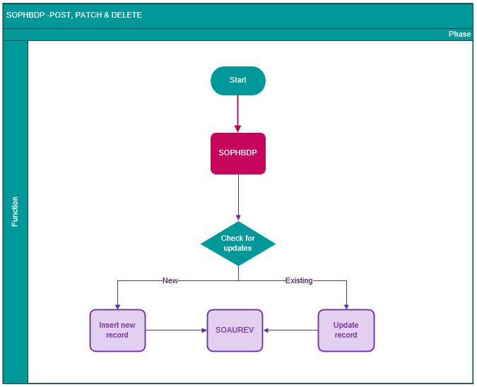
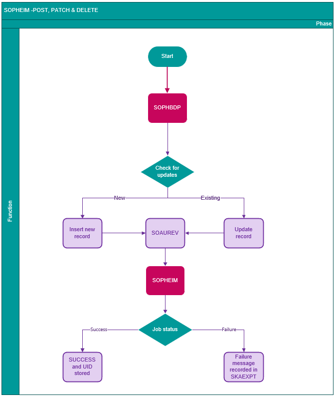
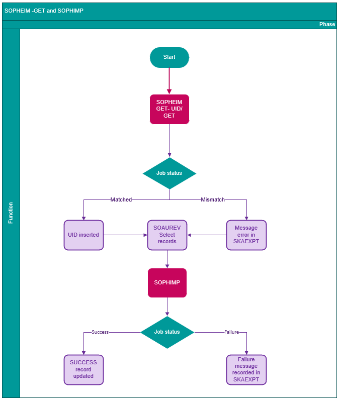

Processes
Processes for configuring HEIMS and reporting HEIMS data.
- SOPECAF, SKPECAF, and SOPICAF process eCAF data
- SOPPDAD facilitates Device activation, Device authentication, and Device Key refresh on ProDA.
- SOPHBDP facilitates the processing of bulk HEIMS data.
- SOPHEIM facilitates API to POST, PATCH, GET, and DELETE.
- SOPHIMP facilitates the import of HEIMS data.
- SOPDCAN gathers data for Commonwealth Assistance Notices
eCAF processing
Banner ASCGEN includes processes that interact with the Australian government eCAF system. Student enrolment records can be uploaded and enrolment data and eCAF data can be retrieved using APIs. eCAF data is then loaded into Banner using the minimal manual intervention process.
You can perform the following tasks.
- Post enrolments to the Australian government eCAF website using the POSTENROLMENTS and PUTENROLMENTS APIs.
- Retrieve data from the Australian government eCAF website using the GETENROLMENTS and GETECAFS APIs.
- Update or insert records on the Request for Commonwealth Assistance (SKAECAF) page by processing data retrieved by the GETECAFS API.
- Automate the SOPECAF process for inserting records into the SOTBCAE table, along with scheduling the SKPECAF process to routinely execute POST Enrolment and GET ECAFS, to enable eCAF processing to run seamlessly without requiring manual user intervention.
Gather data to post enrolment records
Procedure to gather data that the POSTENROLMENTS API uses to upload student enrolment records to the Australian government eCAF website.
About this task
Procedure
- Enter the student’s expression of interest and eligibility information in the eCAF Eligibility Processing Status (SOAEEPS) page and save the details.
- Access the Job Submission (GJAPCTL) page.
- Enter SOPECAF in the Process Code field.
- Go to the next block.
- Enter Run in Sleep/Wake Mode as Y and On Demand Evaluation as N to run periodically for the defined Sleep Interval or Enter Sleep/Wake Mode as N and On Demand Evaluation Y to run the process on demand.
- Enter the ID in the Organisation ID field.
- Enter the value in the Academic Year field.
- Enter the HELP type value in the HELP Type field or % value to run the process for all HELP Types.
- Ensure that the value for the Run Mode parameter is A for Audit and U for Update.
- Go to the submission block.
- Save the details.
- Optionally, view the data in the Enrolments window of the Commonwealth Assistance Student Data (SOAECAF) page.
Post student enrolment record data
Procedure to post student enrolment records to the Australian government eCAF website. The process can either be initiated on-demand or scheduled to run periodically using a sleep-wake cycle.
Procedure
- Access the Job Submission (GJAPCTL) page.
- Enter SKPECAF in the Process Code field.
- Go to the next block.
- Enter Run in Sleep/Wake Mode as Y and On Demand Evaluation as N to run periodically for the defined Sleep Interval or Enter Sleep/Wake Mode as N and On Demand Evaluation Y to run the process on demand.
- Enter a value of POST ENROLMENTS for the eCAF API Type parameter.
- Enter values for other parameters as needed.
- Ensure that the value for the Run Mode parameter is U for Update.
- Go to the submission block.
- Save the details.
Retrieve student eCAF data
Procedure to retrieve student eCAF records from the Australian government eCAF website. The process can either be initiated on-demand or scheduled to run periodically using a sleep-wake cycle.
Procedure
- Access the Job Submission (GJAPCTL) page.
- Enter SKPECAF in the Process Code field.
- Go to the next block.
- Enter Run in Sleep/Wake Mode as Y and On Demand Evaluation as N to run periodically for the defined Sleep Interval or Enter Sleep/Wake Mode as N and On Demand Evaluation Y to run the process on demand.
- Enter a value of GETECAFS for the eCAF API Type parameter.
- Enter values for other parameters as needed.
- Ensure that the value for the Run Mode parameter is U for Update.
- Go to the submission block.
- Save the details.
Results
Load eCAF data into SKRECAF
Procedure to load eCAF data into the SKRECAF table and assign students to the correct HELP contract based on the Contract Assignment Rules (TSACOAR) without needing user intervention. This process can either be initiated on-demand or scheduled to run periodically using a sleep-wake cycle.
Before you begin
- Define the Contract ID and Contract Number for the HELP Type in the SKARSYS page.
- Set the contract base in the TSACONT page for the contract ID, number, and the term.
- Establish rules in the TSACOAR page considering the Contract ID, Contract Number, effective term, and HELP type.
- Set the Create Contract field to Y and check the Automatically Authorize check box to assign the HELP contract ID to the student.
- Set the Study Path to Y for all the HELP TYPES except for SA HELP.
- Check the Active indicator to ensure that the rules are applicable.
- If the Citizenship Status is New Zealand, ensure that the attribute code matches the CONTRACT_RULE_NZ_ATTR system parameter.
- For the HECS-HELP contracts, match the cohort with the contribution method from the eCAF record. Assign contracts only to students with a contribution method of Obtain Loan.
Procedure
- Access the Job Submission (GJAPCTL) page.
- Enter SOPICAF in the Process Code field.
- Go to the next block.
- Enter Run in Sleep/Wake Mode as Y and On Demand Evaluation as N to run periodically for the defined Sleep Interval or Enter Sleep/Wake Mode as N and On Demand Evaluation Y to run the process on demand.
- Enter the value in the Academic Year field.
- Ensure that the value for the Run Mode parameter is U for Update.
- Go to the submission block.
- Save the details.
Results
Post progressions data
Procedure to post progressions records for VET Student Loan students to the Australian government eCAF website
Procedure
- Access the Job Submission (GJAPCTL) page.
- Enter SKPECAF in the Process Code field.
- Go to the next block.
- Enter a value of POSTPROGRESSIONS for the eCAF API Type parameter.
- Enter values for other parameters as needed.
- Ensure that the value for the Run Mode parameter is U for Update.
- Go to the submission block.
- Save the details.
Retrieve progressions data
Procedure to retrieve progressions data for VET Student Loan students from the Australian government eCAF website
Procedure
- Access the Job Submission (GJAPCTL) page.
- Enter SKPECAF in the Process Code field.
- Go to the next block.
- Enter a value of GETPROGRESSIONS for the eCAF API Type parameter.
- Enter values for other parameters as needed.
- Ensure that the value for the Run Mode parameter is U for Update.
- Go to the submission block.
- Save the details.
eCAF Automation
The Banner eCAF automation feature uses sleep/wake the Scheduler functionality in the SOPECAF, SKPECAF, and SOPICAF process to provide improvements to eCAF processing with minimum manual intervention.
- Post enrolments to the Australian government eCAF website using the POSTENROLMENTS API.
- Retrieve data from the Australian government eCAF website using the GETECAFS API.
- Update or insert records on the Request for Commonwealth Assistance (SKAECAF) page by processing data retrieved by the GETECAFS API.
- Assign Students to the correct HELP contract based on contract assignment rules (TSACOAR) page.
The following table details the eCAF business process definition.
| Process | Process Description |
|---|---|
| SOPECAF - Gather data to post enrolment records |
|
| SKPECAF - Post student enrolment record data/ Retrieve student eCAF data | Procedure for posting student enrollment records to or retrieving student eCAF records from the Australian government eCAF website while specifying the Sleep/Wake mode as either 'Y' or 'N' on the Job Submission (GJAPCTL) page. |
| SOPICAF - Load eCAF data into SKRECAF | Procedure to load eCAF data into the SKRECAF table and assign students to the correct HELP contract based on the contract assignment rules (TSACOAR) page without needing user intervention by defining Sleep/Wake mode to Y or N in Job Submission (GJAPCTL) page. |
|
Note: To halt the Sleep/Wake Scheduler, navigate to the Sleep Wake Maintenance (GJASWPT) page, select the relevant process and printer in theKey block, and set the Continue to Run field as N.
|
|
USI Verification (SOPVUSI) process
The SOPVUSI process verifies the Unique Student identifier (USI) for a single student or a set of students or a population selection or for all the unverified students using a microservice.
| Parameter Name | Required? | Description | Values |
|---|---|---|---|
| Run for all unverified USI’s? | Yes | Y to run for all or N to run for one or some students or a population. | NA |
| Student ID | NA | Enter Student ID | NA |
| Application Code | Population selection application name | NA | |
| Selection Identifier | Code that identifies the sub-population to work with. | ||
| Creator ID | Population selection creator ID | ||
| User ID | The user ID of the person running the sub-population rules. |
| Configuration Name | Description |
|---|---|
| unique.student.identifier.env.production.ind | The Environment Production Indicator specifies whether the unique student identifier environment is production or test. Default value is false. |
| unique.student.identifier.keystore | Keystore credentials used against the authentication server. |
| unique.student.identifier.keystore.credential.id | The Keystore credential ID for the training organisation. |
| unique.student.identifier.keystore.file.name | The Keystore file name for the keystore stored outside of Banner. |
| unique.student.identifier.keystore.password | The Keystore password for the training organisation. |
| unique.student.identifier.keystore.valid.ind | The Keystore Valid Indicator specifies whether the keystore is valid for the training organisation. Default value is False, and it changes to True, when the keystore is validated with the authentication server. |
| unique.student.identifier.microservice.enabled | The microservice enabled configuration specifies whether USIs are verified using the Ellucian microservice or a previous solution. Default value is false - indicating that the Ellucian microservice is not enabled. Change this value to true to use the microservice. |
| unique.student.identifier.microservice.password | The password of the generic user name for authentication of unique student identifier processes on the microservice server stored as an encrypted string. |
| unique.student.identifier.microservice.url | The institution microservice server URL for Verify unique student identifier. |
| unique.student.identifier.microservice.username | The generic username so that the unique student identifier processes can be authenticated on the microservice server. |
| unique.student.identifier.org.code | The unique identifier used by the unique student identifier registry to recognize the organisation. |
| unique.student.identifier.realtime.verifycode | The real time verify indicator specifies whether the USIs will be verified in real time or not. Valid values are:
|
| unique.student.identifier.single.name.character | When the SINGLE NAME STANDARD is either FIRST-SPECIAL or LAST-SPECIAL, the Single Name character is the character entered into either the First Name or Last Name field. |
| unique.student.identifier.single.name.standard | When the SINGLE NAME STANDARD is either FIRST-SPECIAL or LAST-SPECIAL, the Single Name Character is the character entered into either the first name or last name field. |
- Enter the Run for all unverified USI’s? parameter as Y. The process runs USI verification for all the USI records where the verification date is Null and consent is Y.
- If the Run for all unverified USI’s? parameter is N, enter either Student ID/s or Population selection parameters. The process runs USI verification for all the student ID’s specified or the Student IDs in the population whose verification date is Null and consent is Y.
When the process has run, the process output displays the status for each record. If the USI has been verified, the status is updated to Verified and the process populates the verification date. The Additional ID (GORADID) table stores the verified USIs to allow institutions to view in the Identification (SPAIDEN) page and also to use in Additional ID searches.
If there is an issue verifying the USI, the status is updated, and the Additional ID Verification (GKAADIV) page and the Request Exceptions (SKAEXPT) page display the error message.
Delete Unique Student Identifier (SOPDUSI) process
The SOPDUSI process deletes the Unique Student identifier for a single student or a set of students or a population selection. The process output displays the deleted student details (ID). After the record deletion, the GKAADIV page no longer displays the USI record.
The SOPDUSI process has the following parameters.
| Parameter Name | Required? | Description | Values |
|---|---|---|---|
| Student ID | Yes | Enter Student ID | NA |
| Application Code | Yes | Population selection application name | NA |
| Selection Identifier | Yes | Code that identifies the sub-population to work with | NA |
| Creator ID | Yes | Population selection creator ID | NA |
| User ID | Yes | The user id of the person running the sub-population rules | NA |
- Enter either the Student ID(s) or select population parameters for USI that you want to delete. The process executes the USI deletion for all specified student IDs or the student IDs within the selected population.
- After you execute the process, the output displays the details (ID) of the deleted students. Following the deletion, the GKAADIV page no longer display the USI record.
- Ensure that the administrators have an exclusive access to this process with the ability to delete the USI for students.
Commonwealth Assistance Notice (SOPDCAN) process
The SOPDCAN process allows you to gather all Commonwealth Assistance data and correctly insert and populate the gathered into the SKRDCAN table, in a manner that is compliant with the data gathered for TCSI.
- Enter a term code to gather only the registrations or SA-HELP or OS-HELP records for that term.
- Enter a run type of S to gather only the SA-HELP records.
- Enter a run type of O to gather only the OS-HELP records.
- Enter a run type of U to gather only unit registration records.
- Enter a run type of A or leave the run type blank to gather unit registrations and SA-HELP and OS-HELP records.
The SOPDCAN process has the following parameters.
| Parameter Name | Required? | Description | Values |
|---|---|---|---|
| Reporting Year | Yes | Enter the reporting year for Commonwealth Assistance Notices. | Academic Year Code Validation (STVACYR) page |
| Organisation ID | Yes | Enter the ID of the organisation for which you want to run Commonwealth Assistance Notices. | Non-Person Search (SOACOMP) page |
| Census Date | No | Enter a date to only gather data for registrations in the reporting year with census date on or before the entered date. | |
| Student ID | No | Enter a student ID to run the process for a single student. | |
| Application Code | No | Enter the code that identifies the general area for which the selection identifier was defined. You must enter all or none of the population selection parameters. | |
| Selection Identifier | No | Enter the code that identifies the population with which you want to work. The selection identifier must be defined on the Population Selection Inquiry (GLISLCT) page. You must enter all or none of the population selection parameters. | Population Selection Inquiry (GLISLCT) page |
| Creator ID | No | Enter the user ID of the person creating the sub-population rules. The creator ID must be specified when defining the selection identifier. You must enter all or none of the population selection parameters. | |
| User ID | No | Enter the user ID for the population selection. This will match the creator ID and is the Banner login user ID. You must enter all or none of the population selection parameters. | |
| Term Code | No | Enter the term code for which you want to select records | STVTERM |
| Run Type | No | Enter the run type for which you want to select records.
|
Activate your device and refresh the access token
You can run the SOPPDAD process from the GJAPCTL page to activate your device and refresh the access token.
Procedure
SOPPDAD process flow
The SOPPDAD process flow diagram.

HEIMS Bulk Validation (SOPHBVP) process
The SOPHBVP process runs the data validation checks for the Student, Course Admission and Unit Enrolment packets and their sub packets, so that users can correct issues before running the SOPHBDP and SOPHEIM processes.
- student details that the process does not pick up, along with the validation message or reason
- the reason why the process does not validate the data and not report to TCSI
- Note: It is possible that, for a student, you can view multiple validation reasons as to why the process does not pick up the student record.
List of validation messages available.
| Validation Messages | Description |
|---|---|
| STUDENTS | |
| Students born outside Australia with no Arrival Year. | Student born outside of Australia and is not an OFFSHORE student, whose arrival year in the SKAENRL page is blank. |
| Students does not have a citizenship effective from date. | Student whose citizenship effective from date is blank. |
| Students with an active placeholder curriculum and an active non-placeholder curriculum. | Student has an active learner placeholder curriculum and an active non-placeholder curriculum. Institutions need to make one of the curriculum to be inactive. |
| COURSE ADMISSION | |
| Student has multiple study paths for the same program. | Student who has more than one study path for the same program. |
| Curriculum record is not active and was made inactive earlier than the reporting year. | Student has a curriculum record which is not active and is made inactive earlier than the reporting year. It has to be inactive for a term in the current reporting year. |
| Curriculum record has a sequence of 99. | Curriculum record has a sequence of 99. |
| Student has multiple curricula on the same study path. | Student has more than one program on the same study path. |
| Student has study path linked to multiple outcome curricula. | Student has the same study path linked to more than one outcome record. |
| The Education Level is not populated for the study path. | The Education Level field value is not populated for the study path. |
| The CIPC code for field of study is not between the values for the system parameters CIPC_FIELD_OF_EDUCATION_MIN and CIPC_FIELD_OF_EDUCATION_MAX. | The CIPC code for field of study is not between the values for the system parameters CIPC_FIELD_OF_EDUCATION_MIN and CIPC_FIELD_OF_EDUCATION_MAX. |
| The field of study is not active. | The field of study for the curriculum is not active. |
| The field of study is not current. | The field of study for the curriculum is not current. |
| The CIPC code for field of study is not populated on STVMAJR. | The CIPC code for field of study for the curriculum is not populated on STVMAJR |
| No major field of study for this curriculum. | No major field of study for this curriculum. |
| Parameter Name | Required? | Description | Values |
|---|---|---|---|
| File Type | Yes | Enter the HEIMS API file type | NA |
| Organisation ID | Yes | Enter the organisation ID | NA |
| Reporting Year | Yes | Enter the reporting year | NA |
Run the HEIMS bulk data process
Run the SOPHBDP process to process bulk HEIMS data.
Procedure
-
To review the log file, perform the following steps:
-
From the top panel, click the Related icon
 .
.
-
From the top panel, click the Related icon
SOPHBDP process flow
The SOPHBDP process flow diagram for the POST, PATCH, and DELETE methods.

Delete conditions for the SOPHBDP process
The SOPHBDP process sets records as Ready to Delete if they are inactive on the export/bulk table and they still have a UID. To mark a record that is not active, the user needs to clear the Active check box using the SOAUREV page.
| API endpoint | Delete condition |
|---|---|
| Campuses |
|
| Student |
|
| Student Citizenship |
|
| Student Disabilities |
|
| Student Commonwealth Scholarship |
|
| Course Admissions |
|
| Bases for admission |
|
| Course specialisation |
|
| Course prior credits |
|
| HDR End user engagement |
|
| HDR Scholarship |
|
| RTP Stipends |
|
| Unit Enrolment |
|
| Unit Enrolment AOU |
|
| Aggregated Awards |
|
| Aggregated Awards Specialisation |
|
| Early Exit Awards |
|
| OS-HELP |
|
| SA-HELP |
|
| Course Applications |
|
| Course Preferences |
|
| Course Offers |
|
| Course Offers Bases for Admission |
|
Invoke HEIMS data
You can run the SOPHEIM job process from the GJAPCTL page to invoke and process data for HEIMS APIs submission.
Before you begin
You must construct the file carefully to synchronise with the import table structure and no matching is made when you import the data.
Use the GET-PROCESSING API method after the system loads the data into an import table using the CSV-IMPORT method. GET-PROCESSING validates the imported data and updates the status of each record. If there are validation errors, the details are inserted into the exception SKREXPT table.
Before running the SOPHEIM job process, verify all the FAILURE records for any exceptions in the SKAEXPT page.An integrated purge process clears the exceptions from the SKREXPT table based on the specified File Type, API Method, and Organisation ID.
Procedure
-
To review the log file, perform the following steps:
-
From the top panel, click the Related icon .
-
From the top panel, click the Related icon
SOPHEIM process flow
The SOPHEIM process flow diagram for the POST, PATCH, and DELETE methods.

Import HEIMS data
You can run the SOPHIMP process to import HEIMS data.
About this task
COURSES(Courses) – Data will be inserted or updated on SKRDRCO, SORCFOE and SORCSPL from SOTICRS, SOTICFE and SOTICSLCRSE_STUDY(Course of Study) - Data will be inserted or updated on SORCRST from SOTICSTCRSE_CAMPUS(Course on Campus) - Data will be inserted or updated on SORCRCM from SOTICCMUNITS_STUDY(Units of Study) - Data will be inserted or updated on SORUSTD from SOTIUSTCHESSN(CHESSN) - Data will be inserted or updated on SKRCHSN from SOTISTD for records with CHA notifications in SOTINOTHELP_BALANCES(HELP Balances) - Data will be inserted or updated on SKRCHSN from SOTIBALDISABILITIES (Student Disabilities)– Data will be inserted or updated on SGADISA from SOTIDISCWLTH_SCHOL (Commonwealth Scholarships)– Data will be inserted or updated in the SKASTSP page (SORCWSH) from SOTICWSTFN (TFN Status)– Data will be updated in the SKAEAF page from the SOTINOT table for records with TFN notifications.
Procedure
-
To review the log file, perform the following steps:
-
From the top panel, click the Related icon .
-
From the top panel, click the Related icon
SOPHEIM-GET and SOPHIMP process flows
The SOPHEIM process flow diagram for the GET method, that also includes the SOPHIMP process.

HELP adjustment overview
The Help Adjustment process creates entries in a new table: SORPPMT, and manages partial payments against subjects and Student Services Fees (SSAF). It utilizes the deferred payment amounts created by TSRSBIL to distribute deferred payment amounts to tuition charges and SSAF fees.
The process includes logic to apply a discount to eligible students in a Commonwealth supported place who have made an eligible partial payment for their student contribution even though this discount is not applicable for units of study with census dates on or after 1 January 2023.
You can configure the logic so that no discount is applied.
Create a HECS Discount Contract on TSACONT that pays 0% of HECS/Student Contribution charges and use the value that you assigned to the HECS_DISC_CONTRACT_NUMBER system parameter for the Contract Number.
Set the Parameter Value for the HECS_MIN_PART_PAY_AMOUNT system parameter to '0' on the SKARSYS page for the 2023 Academic Year and for later academic years.
The process utilizes the configuration in SOATERM to control the execution of the process. The Census One Date associated with Part of Term codes are considered by the process to identify Term Codes for processing by ensuring that Census One Date is less than or equal to the execution date.
When the Ignore Census Date of Value parameter is set to N, the process will only pick up students when the census date of their units of study for the processing term plus any grace days is earlier than or equal to the system date.
The HELP-CENSUS-GRACE-DAYS system parameter allow institutions to configure the number of grace days after the census during which student may drop units of study without penalty.
The VET provider can also use installment payment by the student (TSAISTL) and run the SOPHADJ process to calculate the adjustment for the specific transaction.
The process scans through the HELP Third Party contracts and Student Finance account tables as per configuration in the SKARSYS page using the following parameter values:
| Parameter | Description |
|---|---|
| FEE_HELP_LOAN_FEE | Detail code to report for FEE-HELP Loan Fee |
| FEE_HELP_STATUS_CODE | Curriculum Rate code for FEE-HELP |
| HECS_DISC_CONTRACT_NUMBER | Represents the Discount Contract Number for all HECS Help Contracts. Set it to a value that is different to the value you set for the HELP_CONTRACT_NUMBER system parameter. |
| HECS_DISC_PRIORITY_START | Starting value for assigning priority of HECS-HELP Discount contract |
| HECS_DISCOUNT_PERCENTAGE | Percentage of discount applied to upfront HECS-HELP payments. Set this to 0 for academic year 2023 and later academic years. |
| HECS_PART_PAY_CALCULATOR | The partial payment calculator is used in the SOPHADJ process to calculate the correct discount, when an eligible student makes an eligible partial payment for their student contribution for a unit/units of study and that payment is less than the 90 percent of the original charge. Set this to 0 for academic year 2023 and later academic years. |
| HECS_STATUS_CODE | Curriculum Rate code for HECS-HELP |
| HECS_UPFRONT_STATUS_CODE | Curriculum Rate code for HECS-HELP Upfront |
| HELP_CONTRACT_NUMBER | Contract Number for all Help Contracts |
| HELP_FEE_CONTRACT_ID | Contract ID for FEE Help |
| HELP_HECS_CONTRACT_ID | Contract ID for HECS Help |
| HELP_SSAF_CONTRACT_ID | Contract ID for SSAF Help |
| HELP_SSAF_PTRM_CODE | Part of Term code for SA-HELP Adjustments |
| HELP_VSL_CONTRACT_ID | Contract ID for VSL |
| TOTAL_AMOUNT_FEES | Tuition Charge Detail Code |
| TOTAL_AMOUNT_HECS | Tuition Charge Detail Code |
| UPFRONT-HECS-DISCOUNT-ELIGIBLE | Rate codes used to indicate that Commonwealth supported student is eligible for the HECS-HELP discount. Remove all parameter values for the academic year 2023 and later academic years. |
| VSL_STATUS_CODE | VSL students status code for a unit of study |
| RATE-STARTUP-HELP | |
| RATE-STARTUP-HELP | |
| STARTUP_HELP_STATUS_CODE | |
| HELP_STARTUP_CONTRACT_ID | |
The process calculates the correct loan fee for eligible FEE-HELP and VET Student Loan students using the following system parameters.
| Parameter Name | Parameter Value | Description |
|---|---|---|
| FH-LOAN-FEE-PERCENTAGE | 20 | This is the percentage for calculating the loan fee amount for FEE-HELP. |
| TCSI-CALCULATE-LOAN-FEE | N | Set this parameter to Y if the SOPHADJ process should calculate Loan Fee for FEE-HELP and VET Student Loan students. |
| VSL-LOAN-FEE-PERCENTAGE | 20 | This is the percentage for calculating the loan fee amount for VET Student Loan. |
| VSL-LOAN-FEE-ELIG-RATE | UPDATE ME | List of rate codes that indicate that a student is eligible for a loan fee if they have a VET Student Loan. |
Calculate HELP fee adjustment
You can run the SOPHADJ process to calculate fee adjustment correctly.
About this task
You need to run the SOPHADJ process to correctly calculate reportable fee amounts for all HELP types, even if the students have not made any partial payments.
- The order in which the HELP Adjustments are applied is based upon priority number order as per the Third Party configuration in TSACONT or TSAACCT, against a student
- All HELP Contracts for HECS-HELP, FEE-HELP, VSL, and SA-HELP must be setup under the Detail Code Level Authorisation section in TSACONT.
- Application of Payment Process ensures payments apply as per configuration of detail code priorities in TSADETC.
- You can execute this process as a part of end of day schedule of processes to ensure that the SORPPMT process is up to date. The following is the sequence to execute the steps:
- TSRSBIL - APPLY-CREDITS (TERM)
- TGRUNAP
- TGRAPPL
- GLBDATA - 3P_UNAPPLIED_CREDITS
- TGRUNAP - 3P_UNAPPLIED_CREDITS (TERM)
- TGRAPPL - 3P_UNAPPLIED_CREDITS
- SOPHADJ - (TERM)
- TGRUNAP
- TGRAPPL
- GLBDATA - 3P_UNAPPLIED_CREDITS
- TGRUNAP - 3P_UNAPPLIED_CREDITS (TERM)
- TGRAPPL - 3P_UNAPPLIED_CREDITS
- TSRSBIL - SCHEDSTMT (TERM)
- Records are deleted from SORPPMT so that if a student is removed from a HELP contract, they will not continue to have data in SORPPMT. This means that the system regenerates each student’s SORPPMT table data based on their latest HELP status.
- Students in Commonwealth supported places who are eligible for HECS-HELP but have chosen to pay upfront are processed first.
- Students who have taken HECS-HELP are processed next.
- The processing of students for FEE-HELP, SA-HELP and VET Student Loan are processed after HECS-HELP processing.
- When a student is in more than one study path, any study path that is a Commonwealth supported place where a student eligible for HECS-HELP has chosen to pay upfront is processed first, then any study path where the student has taken HECS-HELP is processed next, then other HELP types are processed for that student.
- For eligible students, the SOPHADJ process calculates the FEE-HELP and VET Student Loan amounts and inserts into the SORPPMT table.
Procedure
-
To review the log file, perform the following steps:
-
From the top panel, click the Related icon .
-
From the top panel, click the Related icon
Integration APIs
APAC Integration APIs retrieves the details for students.
| HTTP Method | API Name | Description |
|---|---|---|
| GET | student-services-amenities | Retrieves SSAF fee details for students based on the specified academic year and term. |
| GET, POST, PUT, and DELETE | student-notifications | Retrieve records from SOTINOT and creates, update records to the SOTINOT table which has student notifications. |
| GET | student-entitlement-limits | Retrieves the maximum HELP loan amount. This API tracks students' HELP loan usage and status, enabling notifications as students near their entitlement limits. |
Data Connect Pipeline requirements
You can use Data Connect pipelines in Banner.
A Data Connect pipeline is a that Ellucian offers to facilitate the listing and execution of any Data Connect pipeline through an API call. This tool is integral for managing data integrations and workflows within the Ellucian ecosystem, providing a streamlined method for handling complex data processes.
- Set up Banner Ethos API access
- Set up Ethos application
Prerequisites
- Banner ASCGEN 8.25
- Banner Student 9.3.37
- Banner ASCGEN 9.3.36
- Banner Student 8.34
- Banner Student API 9.37
- Banner DB Upgrade 9.38
- Banner Integration API 9.37
- Banner BPAPI 9.3.37
- Ethos setup for Student API Integration API & BPAPI applications
- Banner Experience Setup for the tenant
- Access to Integration Packages (Data Connect) extension
Setup Banner Ethos API access
Set up Ethos application
Before you begin to process the SSAF calculation and MAX HELP amount calculation through Data Connect, create a proxy application for the integration resources.
About this task
Procedure
Create APAC Services Proxy application
Create the Student Services Proxy application so that the Banner end points can be accessed through this proxy application.
Before you begin
- Access to Ellucian Ethos Integration. For more information and requesting access, see Ellucian Ethos Integration requests.
- Ensure the presence of base URLs for the Ethos Integration Application, including the Ethos Integration API, Ethos Student API, and Banner BPAPI resources.
Procedure
-
On the Ethos Integration header bar, click the gear button
 and then select the Ethos environment where you want to perform this procedure.
and then select the Ethos environment where you want to perform this procedure.
Create Crosswalks
For Ethos Data connect customers, create a new crosswalk.
About this task
Procedure
Configure Experience cards
The Ellucian Experience home page contains one or more cards, and each card provides access to specific functionality supported by Experience.
Procedure
- Log in to Experience.
- Navigate to the Main menu.
- Access Configurations.
- In the Card Management window, locate the HELP-AVAILABILITY and SSAF-ASSESSMENT cards.
- Click Actions to edit the card.
- Go to the Roles section.
- Select the users that you want to have the access to the cards, by clicking the check box.
- Click Finish.
SSAF Assessment
The (Student Services and Amenities Fee) SSAF rule card is an extension card built on the rule-engine template to validate and execute rules.
You can customise the available rules as per your institution's policies and guidelines and also based on elements such as Instructional Method, TermType, Program, and EFTSL values, using type-based operators. When constructing rules, ensure that the rules cover all the scenarios, so that only one rule is returned as the outcome during validation.
Additionally, you can copy the existing rules and update them as needed. After you modify the rules, the new rule ID should be copied into the crosswalk for proper integration and reference.
Create and configure a ruleset
Users can create a new ruleset from the Rulesets page by clicking the Create Ruleset button or by running the SSAF-RULESET pipeline to generate an example ruleset.
Before you begin
About this task
A ruleset is a collection of one or more associated rules that run together as a single unit against a set of data. Each group in the ruleset starts as a simplistic if-then statement. Depending on your needs, you can have multiple rule groups, add nested groups within rule groups, add multiple rules inside one ruleset, and can become as simple or complex as you need.
When building a ruleset, keep these considerations in mind:
- The system processes the rules in sequential order starting at Rule 1.
- If the data meets the criteria of a rule, the result value is returned.
- If the data does not meet the criteria of the rule, the result value is not returned.
Procedure
From here, continue to build out the rule conditions as needed.
- Optional:
Click Add Condition
 to add an
to add an ANDorORclause to your condition statement.By default, the system uses anANDoperator when adding a condition. You may change this to OR as needed. Any additional conditions will carry forth the selected operator. - Optional:
To add another rule to the ruleset, click Add Rule.
Each rule within a ruleset is evaluated for its own conditions and has its own
THENresult.Tip: If you want to create a rule that is similar to an existing rule in the ruleset, click Duplicate on the existing rule to save time.
on the existing rule to save time. - Optional:
To delete any part of the ruleset (rule, group, condition, nested group), click Delete or Remove
 for the associated item.
for the associated item.
What to do next
Test and publish a ruleset
Use the Test Ruleset feature to verify that a ruleset meets your intended rules logic and provides the expected outcome.
Before you begin
About this task
Procedure
Rulesets list page information
Information about ruleset list page.
- If you know the name of the ruleset, use the search box to locate the ruleset. The system can search on partial names and names containing the search criteria. The search feature only searches on ruleset names and is case insensitive.
- To filter the list based on a ruleset status, use the Filter
 . You can select one or more statuses to narrow the list.
. You can select one or more statuses to narrow the list.
You can manage a ruleset from the Ruleset list page. The options for managing the ruleset vary depending on its status. Locate the ruleset and its version that you want to manage. Click Actions  and make your choice.
and make your choice.
The available actions for each status are:
- Draft status: edit, rename, copy, delete
- Published status: view, copy
- Outdated status: view, archive
- Archived status: view
Ruleset statuses
As you build and refine your rulesets, the rulesets progress through several statuses. The ruleset status determines what actions you can take with that ruleset.
Rulesets move through four statuses: .
- All new rulesets start in Draft status, version 1.0.0. When a ruleset is in Draft status, you can edit it, test it, and save it as often as necessary. The version number does not increment when you save changes for a Draft ruleset.
You can also move a Published ruleset to Draft status so you can make updates to it. The system increases the version number when you create a Draft from a Published ruleset.
To delete a Draft ruleset, locate the ruleset on the Rulesets list page. Click the Actions
menu and select Delete. - When you publish a Draft ruleset to make it available for evaluation, the ruleset's status progresses to Published. This applies to Draft rulesets of any version, whether it is the first publication or later versions.
Published rulesets are view-only and cannot be modified. You can copy a Published ruleset to create a new ruleset with a unique name. This new ruleset starts over at version 1.0.0.
- When you publish a new version of an existing ruleset, the existing or former ruleset moves to Outdated status. The version number does not change.
It is useful to retain Outdated rulesets for a period of time because they may still be in use for evaluations until you move to the newer Published version.
You can only view Outdated rulesets or archive them. Outdated rulesets are not available for any new processes to use in evaluation.
- When an Outdated ruleset is no longer used by any processes, you should move the ruleset to Archived status.
Archived rulesets are view-only and intended for administrators to refer to for historical purposes. Archived rulesets are unavailable for evaluation.
You can archive an Outdated ruleset either from the Actions
menu on the Rulesets list page, or by clicking Archive on the Rulesets builder page.
Permitted data types and operators
Valid input element data types for rules are:
- Number
- Boolean
- Date
- String
Valid result data types for rules are:
- Number
- Boolean
- String
Valid operators for rules are:
- Is equal to
- Is not equal to
- Is greater than
- Is greater than or equal to
- Is less than
- Is less than or equal to
- Contains
- Does not contain
- Is in
- Is not in
- Is empty
- Is not empty
Terminology
| Term | Description |
|---|---|
| condition | A logical statement that determines whether an assertion is true. For example, expense amount > 100 is true if expense amount is greater than 100.A condition is made up of three parts:
|
| condition group | Conditions can be connected using logical AND and OR. For example, "expense amount > 100" AND "Is Manager = FALSE" |
| element | An attribute used to build a business rule condition; see condition. |
| inputs | The elements and their respective values to be evaluated by the rules within a given ruleset. All fields configured for a ruleset must be passed as input, even if they are null. |
| operator | A logical operator used to evaluate the value of a field. |
| outputs | The evaluated results of the rules within a ruleset that are actionable by the consuming application. The output could be more than one result. For example, any rules evaluated to TRUE would have a result in the output. |
| result | The outcome of a condition or group of conditions being evaluated. |
| rule | An explicit instruction within a ruleset comprising of conditions and results. |
| ruleset | A named collection of rules. |
| value | The content value of a named element. |
SSAF Ruleset pipeline
The SSAF Assessment pipeline is responsible for populating example rules within the Rules Engine. After running the pipeline, the rules are available in the SSAF ASSESSMENT Rules Card.
To execute the SSAF Assessment pipeline, first, run the pipeline to generate the example rules. After publishing the rules, copy the Rules Engine ID and paste the ID in the Rule ID Crosswalk for execution.
The following table lists the examples of SSAF ruleset.
| Rule | Condition | Result |
|---|---|---|
| 1 |
|
|
| 2 |
|
|
| 3 |
|
|
| 4 |
|
|
| 5 |
|
|
| 6 | Program = Medicine |
|
SSAF Assessment pipeline
Run the Data Connect Pipelines.
About this task
Procedure
HELP Assessment pipeline
The HELP Assessment pipeline retrieves a student's HELP data from the SOAHELP page, including the HELP balance provided by TCSI. If the loan amount lies between 50%-100%, a comment is added to the SPACMNT page.
When the loan amount surpasses 95%, the roll indicator is set to "N" for the maximum term in the paid contracts. Any contract in the future term will have its delete indicator set to "D". The maximum amount for the highest paid term is determined based on the loan limit and the loan amount utilized by the student and is then updated on the TSAACCT page.
- Package: HELP-ASSESSMENT
- Pipeline: HELP-LOAN-CONSUMPTION
- Parameter: API Key which is a mandatory entry field with the typing string
HELP Loan Notifications pipeline
The HELP Loan Notifications pipeline retrieves the Comment Code configured in the Crosswalk within the Integration Packages card.
If the Comment Code field value matches the value in the SPACMNT page, the system triggers a notifications with the latest comment, allowing students to view them in their experience portal. Administrators can manually run the HELP-LOAN-NOTIFICATIONS pipeline or schedule at their preferred time interval.
- voice_email_service
- voice_external_email_client
- voice_external_notification_client
- voice_external_sms_client
- voice_person_client
- Pipeline: HELP-LOAN-NOTIFICATIONS
- Parameter: Client ID, Client Secret, and API Key which is a mandatory entry field with the typing string
Run Data Connect pipelines
Manually, run the Data Connect pipeline that involves authenticating, listing pipelines, and executing through the API.
Procedure
Schedule Data Connect pipelines
Scheduling the Data Connect pipeline automates the listing and execution of data work flows through APIs.